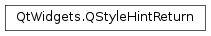

QStyleHintReturn¶
Inherited by: QStyleHintReturnMask, QStyleHintReturnVariant
Detailed Description¶
The
PySide2.QtWidgets.QStyleHintReturnclass provides style hints that return more than basic data types.
PySide2.QtWidgets.QStyleHintReturnand its subclasses are used to pass information from a style back to the querying widget. This is most useful when the return value fromQStyle.styleHint()does not provide enough detail; for example, when a mask is to be returned.
-
class
PySide2.QtWidgets.QStyleHintReturn([version=QStyleOption.Version[, type=SH_Default]])¶ Parameters: - type –
PySide2.QtCore.int - version –
PySide2.QtCore.int
Constructs a
PySide2.QtWidgets.QStyleHintReturnwith versionversionand typetype.The version has no special meaning for
PySide2.QtWidgets.QStyleHintReturn; it can be used by subclasses to distinguish between different version of the same hint type.See also
QStyleOption::version QStyleOption::type
- type –
-
PySide2.QtWidgets.QStyleHintReturn.HintReturnType¶ Constant Description QStyleHintReturn.SH_Default PySide2.QtWidgets.QStyleHintReturnQStyleHintReturn.SH_Mask QStyle.SH_RubberBand_MaskQStyle.SH_FocusFrame_MaskQStyleHintReturn.SH_Variant QStyle.SH_TextControl_FocusIndicatorTextCharFormat
-
PySide2.QtWidgets.QStyleHintReturn.StyleOptionType¶ This enum is used to hold information about the type of the style option, and is defined for each
PySide2.QtWidgets.QStyleHintReturnsubclass.Constant Description QStyleHintReturn.Type The type of style option provided ( SH_Defaultfor this class).The type is used internally by
PySide2.QtWidgets.QStyleHintReturn, its subclasses, andqstyleoption_cast()to determine the type of style option. In general you do not need to worry about this unless you want to create your ownPySide2.QtWidgets.QStyleHintReturnsubclass and your own styles.See also
QStyleHintReturn.StyleOptionVersion
-
PySide2.QtWidgets.QStyleHintReturn.StyleOptionVersion¶ This enum is used to hold information about the version of the style option, and is defined for each
PySide2.QtWidgets.QStyleHintReturnsubclass.Constant Description QStyleHintReturn.Version 1 The version is used by
PySide2.QtWidgets.QStyleHintReturnsubclasses to implement extensions without breaking compatibility. If you useqstyleoption_cast(), you normally do not need to check it.See also
QStyleHintReturn.StyleOptionType
-
PySide2.QtWidgets.QStyleHintReturn.version¶
-
PySide2.QtWidgets.QStyleHintReturn.type¶
© 2018 The Qt Company Ltd. Documentation contributions included herein are the copyrights of their respective owners. The documentation provided herein is licensed under the terms of the GNU Free Documentation License version 1.3 as published by the Free Software Foundation. Qt and respective logos are trademarks of The Qt Company Ltd. in Finland and/or other countries worldwide. All other trademarks are property of their respective owners.